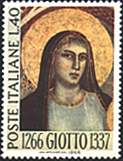
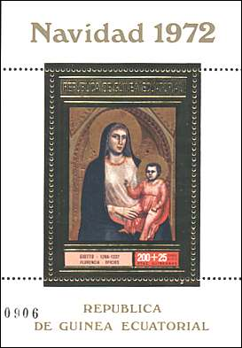
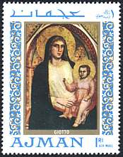
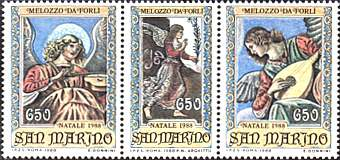
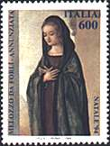
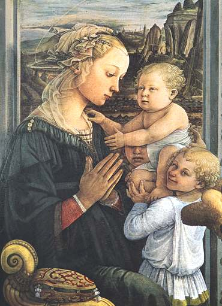
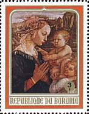
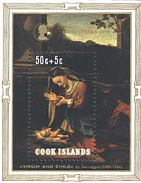

Offices Gallery, Florence. Religious Works of Art on Stamps
← Recently Modernized Pages · Art Gallery · Home
Uffizi Gallery, Florence
Religious Works
Hall 2. Giotto di Bondone (1267-1337), Florentine painter. The Virgin in Majesty, about 1310. The personality of Giotto is placed in the panorama of the Italian Art as one of a genial innovator, the initiator of a new pictorial language that came off the Byzantine tradition and connected itself to the classical art. Giotto's entire output consists of religious works, primarily altarpieces and church frescoes. Few remain in good condition, and most have disappeared entirely or have been almost wholly repainted. In the work shown below, painted for the church of Ognissanti, we have an example of the master's painting at the time of its maximum splendor. The elements of the Byzantine tradition are still present (the golden background, the position of the angels like on two inclined planes - unfortunately not seen on stamps), but the Virgin is naturally placed in a space that became reel and three-dimensional.
 |
 |
 |
Halls 19. Melozzo degli Ambrosi, called Melozzo da Forli (1438-1494), The Archangel Gabriel Announcing and The Virgin of Announciation. He introduced in Rome architectures faints in perspective and ceiling figures.
 |
 |
Hall 8. Filippo Lippi, Virgin and Child with two Angels, about 1465. This work is one of the oldest of the master. Filippo Lippi, a Carmelite brother, was formed in the environment of Masaccio. The tutor brings elements of renew, but the sensibility of Lippi moved away of the profound historical and moral sense of Masaccio in order to search for a more intimate and a more sensual language. The painting is dominated by the gentleness of colors that slightly shape the forms and the light that intervene in the relation between the figures in the front and the landscape in the background.
 |
 |
 |
Hall 23. Correggio,real name Antonio Allegri (c. 1489-1534). Adoration of the Child.He was a Renaissance painter, whose innovations in depicting space and movement anticipated the Baroque style. His paintings are characterized by colors that have a cool, silvery sheen, great skill in foreshortening, and by the originality of perspective.